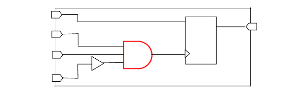

| Description | This rule detects the cells which are used for clock gating have more than 2 inputs. |
| Policy | DESIGN |
| Ruleset | CLOCKS |
| Language | VHDL/Verilog |
| Type | Hardware |
| Severity | Warning |
module RTL_FIRE_NTL_CLK37(q, data, d1, d2, d3);
input data, d1, d2, d3;
output q;
reg q;
buf (d3_i, d3);
and ( clk_i, d1, d2, d3_i);
always @ ( posedge clk_i ) begin
q = data;
end
endmodule
